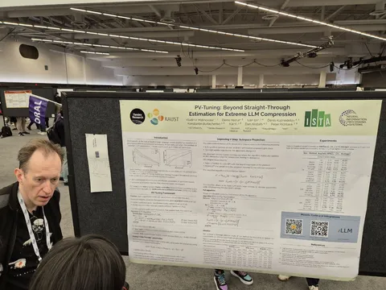
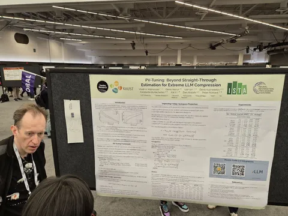

Ещё немного атмосферных фото и видео⚪Команда Яндекса: встреча у стенда со статьёй.
⚪Наша первая статья (
PV-Tuning: Beyond Straight-Through Estimation for Extreme LLM Compression).
⚪Аншлаг на докладе Fei-Fei Li (
From Seeing to Doing: Ascending the Ladder of Visual Intelligence).
⚪Масштабы и пространства конференции.
⚪Новогодний робот на стенде Booster Robotics.
ML Underhood#YaNeurIPS
 
